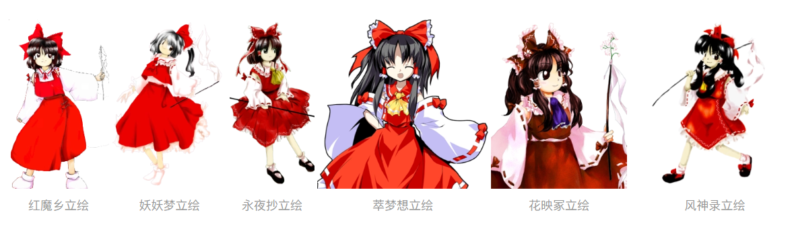

| 博丽灵梦 |
博丽灵梦，系列作品《东方Project》中的主人公，幻想乡境内博丽神社的现有巫女，负责解决在幻想乡中发生的各种异变。在《东方》系列的游戏中均以主角出场，在其他作品中也作为主要角色登场。作为博丽神社的巫女，退治妖怪是她的日常工作。因为神社没什么参拜客，所以整天过着喝茶扫地的闲日子。
|
| 角色形象 |
|---|
| 身份背景 |
幻想乡境内博丽神社的现职巫女。 |
没有大结界就没有现在的幻想乡。博丽神社是监控大结界的神社。解决异变是博丽巫女代代赖以为生的职业。她是历代巫女中最缺乏危机感的一位，而且疏于修行，不过相当有实力。她以与生俱来的好运和敏锐直觉驱除妖怪 。 |
| 博丽的巫女的任务即是“博丽大结界的维持、管理”。不过，结界的存在，充其量也只是为了维持幻想乡的平衡，从另一种意义来说只有幻想乡保持在一种平衡的状态下结界才能成立。幻想乡的平衡——也就是人类和妖怪之间保有的一定平衡。即所谓的“妖怪去袭击人类，而人类恐惧着妖怪”这一概念。将所有威胁这一概念的事物排除，这才是博丽巫女的工作，也就是保护幻想乡所需要做的事情 。 |
|---|

|